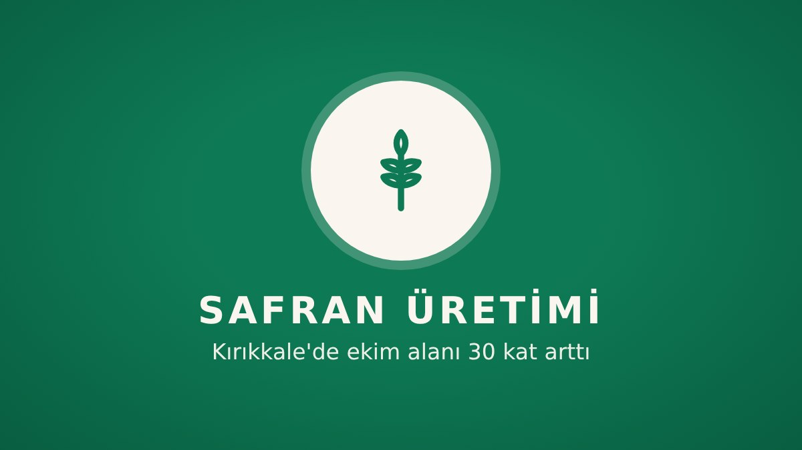
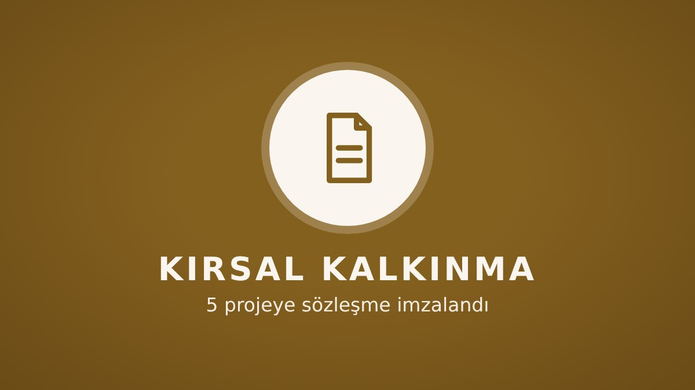
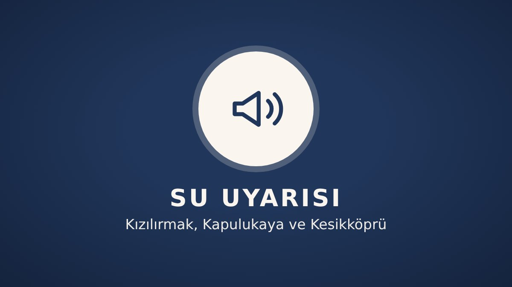
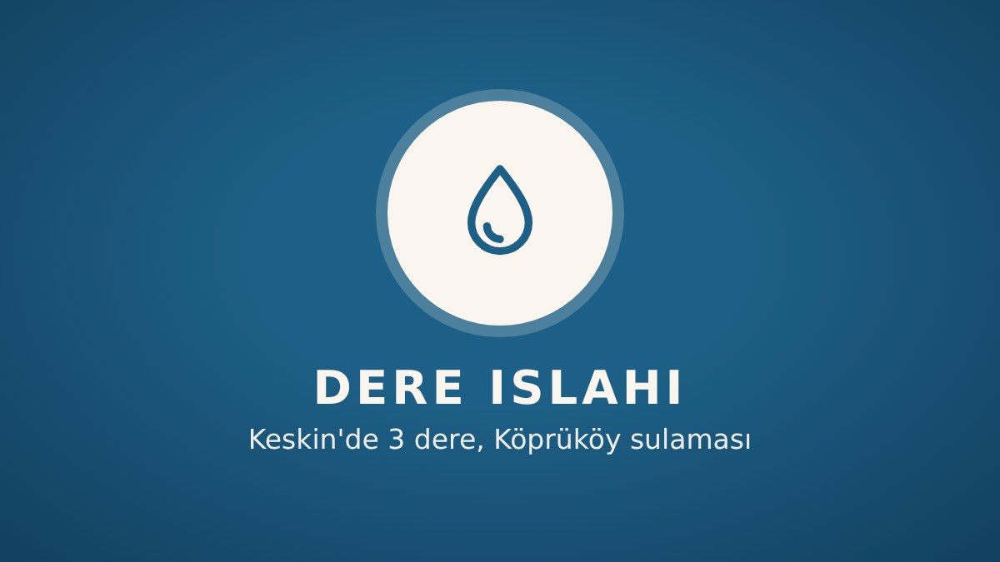
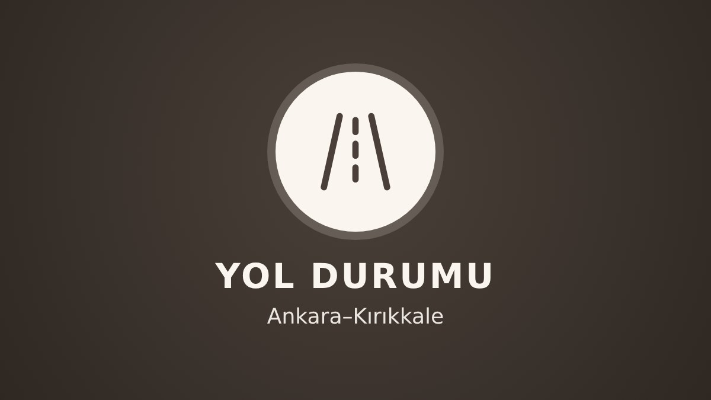
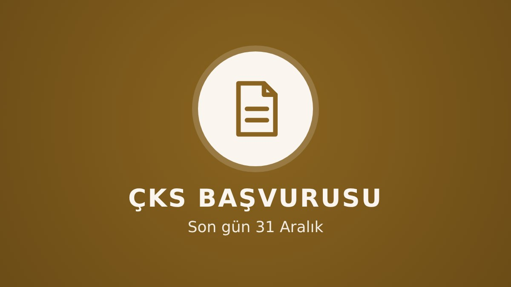
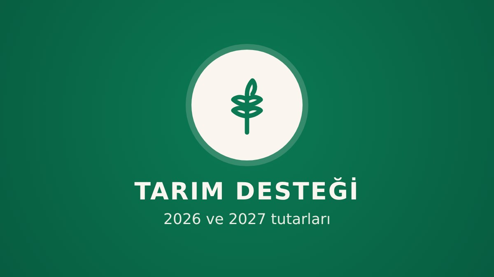
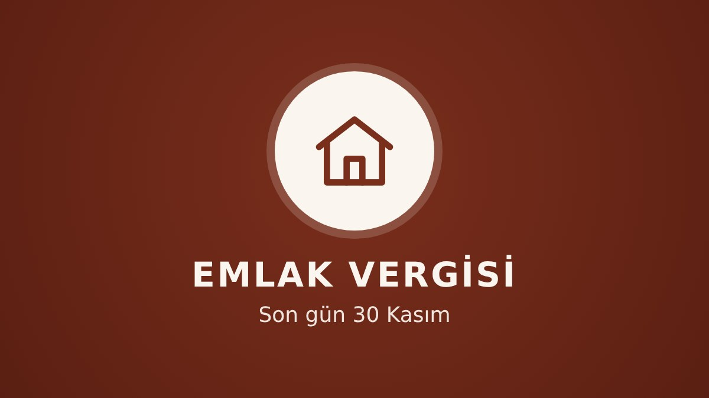

Duyurular
Vefat, düğün ve toplantı ilanları, köyümüzden haberler ve köyümüzün tarihinden yazılar.

Atatürk'ün köyümüzden geçişi (1919)
Bundan 107 yıl önce, Millî Mücadele'nin ilk aylarında Mustafa Kemal Paşa köyümüzden geçti. Paşa ve Heyet-i Temsiliye, 18 Aralık 1919'da Sivas'tan…
Devamını oku ›
Kırıkkale'de safran ekim alanı 30 kat büyüdü
Kırıkkale İl Tarım ve Orman Müdürlüğü'nün "Safran Kokulu Hayaller" projesinde safran önce 200 metrekarelik bir deneme tarlasına ekildi. Üreticilerin…
Devamını oku ›
Kırsal kalkınma desteğinde 5 sözleşme imzalandı
Kırıkkale Tarım ve Orman İl Müdürlüğü, Kırsal Kalkınma Yatırımlarının Desteklenmesi Programı'nın 17. etabında sözleşmelere başladı. İl Müdürü Fatih…
Devamını oku ›
Kızılırmak'ta su seviyesi aniden yükselebilir
Kırıkkale Valiliği, Kesikköprü ve Kapulukaya barajlarındaki hidroelektrik santrallerinde türbinler çalıştırılacağı için Kızılırmak'ta suyun aniden…
Devamını oku ›
Keskin'de dere ıslahı projeleri onaylandı
Kırıkkale'de beş dere ıslahı projesi onaylandı. Bunlardan Danacıobası Taşkavak Deresi, Çipideresi ile Şarlak Deresi ve kolları Keskin'de; diğerleri…
Devamını oku ›
Ankara–Kırıkkale yolunda çalışma var
Karayolları'na göre Ankara–Kırıkkale yolunda birkaç noktada çalışma sürüyor. 28–29. kilometrelerde otoyol inşaatı için kontrollü patlatma yapılıyor;…
Devamını oku ›
ÇKS başvurusunda son gün 31 Aralık
Çiftçi Kayıt Sistemi (ÇKS) başvuruları 31 Aralık 2026'da sona eriyor. Kırıkkale'de tarım ve su kurumlarının ortak toplantısında ayrıca ilçe ve…
Devamını oku ›
Nohut ve mercimekte destek 2027'de artıyor
Kırıkkale İl Tarım ve Orman Müdürlüğü 2026 ve 2027 destek tutarlarını açıkladı. Buğday ve arpada dekar başına temel destek 477,10 liradan 574,60…
Devamını oku ›
Emlak vergisinde son gün 30 Kasım
Keskin Belediyesi, emlak vergisi borcu olanları uyardı: son ödeme günü 30 Kasım 2026. Belediye, birikmiş su borçlarının da ödenmesini istedi.…
Devamını oku ›Halis ÖZBEK Hakk'ın rahmetine kavuşmuştur
Köylümüz Oğuzhan KÖPRÜLÜ ile Fuat ve Vural KÖPRÜLÜ'nün eniştesi, Binnaz ÖZBEK'in eşi Halis ÖZBEK Hakk'ın rahmetine kavuşmuştur. Cenazesi 8 Kasım 2026…
Devamını oku ›Keskin Belediye Meclisi ilçe için yeni kararlar aldı
Meclis, ilçenin ihtiyaçlarını ve süren belediye çalışmalarını görüştü; kararların ayrıntısı henüz açıklanmadı.
Devamını oku ›Köprüköy'de derneğimiz ziyaret edildi, talepler dinlendi
MHP Kırıkkale Milletvekili Halil Öztürk ve beraberindeki heyet Çeşnigir Derneği'ni ziyaret etti. Köylüler ve dernek üyeleri tarım, altyapı ve sosyal…
Devamını oku ›Çipideresi yolunda sona yaklaşıldı
Milletvekili Mustafa Kaplan Keskin ziyaretinde 10,5 km'lik yoldaki çalışmaları inceledi; açılış tarihi verilmedi.
Devamını oku ›Keskin'de ilk Zurna Festivali düzenlendi
Abdal kültürünün simgesi zurna geleneğini yaşatmak için Cumhuriyet Meydanı'nda kortej, halk oyunları ve usta yarışması yapıldı.
Devamını oku ›Çeşnigir-Der kapılarını açıyor: 6 Eylül'de açılış töreni
Dernek merkezi, 6 Eylül 2026 Pazar günü saat 14.00'te Köprüköy Çarşı Merkezi'nde düzenlenen törenle hizmete açıldı; tüm hemşehriler davet edildi.
Devamını oku ›